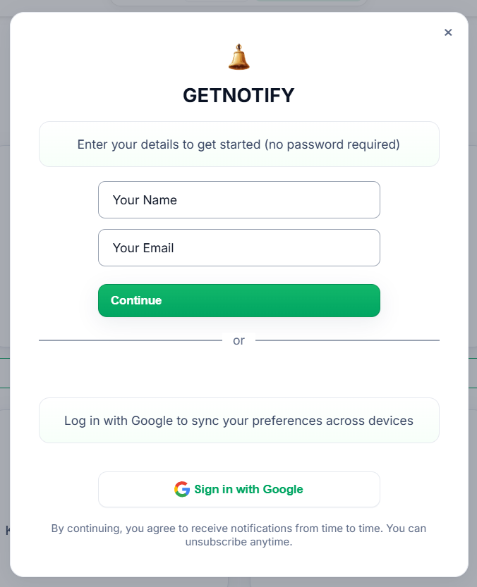
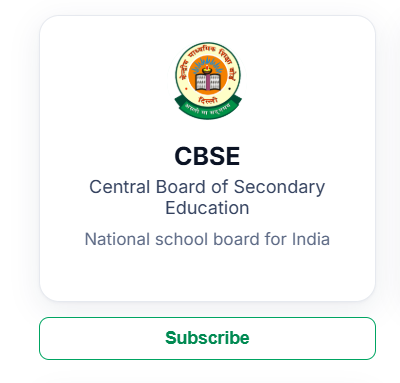

How to Use GETNOTIFY
Your Complete Guide to Getting Started
Getting Started
GETNOTIFY is designed to be simple and user-friendly. Follow these easy steps to start receiving exam notifications and never miss an important update again.
Step 1: Log In to Your Account
To access all features and subscribe to notifications, you'll need to create an account. We offer two easy ways to sign up:
Option A: Quick Sign-Up (No Password Required)
- Click on the "Log in" button located in the top navigation bar.
- A login modal will appear on your screen.
- In the "Enter your details" section, fill in your name and email address.
- Click the "Continue" button.
- You're now logged in! No password or email verification needed.

The login modal with quick sign-up and Google login options
Option B: Sign In with Google
- Click on the "Log in" button in the navigation bar.
- In the login modal, scroll down to the Google sign-in section.
- Click the "Sign in with Google" button.
- You'll be redirected to Google to authorize GETNOTIFY.
- After authorization, you'll be automatically logged in and redirected back to GETNOTIFY.
💡 Tip: Using Google sign-in allows you to sync your preferences across devices and provides a more secure login experience.
Step 2: Browse Exam Notifications
Once you're logged in, you can explore notifications from various exam boards:
- Click on "Notifications" in the navigation bar or visit the notifications page.
- You'll see a grid of exam source cards (CBSE, JEE, NEET, UPSC, etc.).
- Click on any exam source card to view all announcements from that board.
- Browse through the announcements, which are sorted with the latest first.
- Click on any announcement to read the full details on the official website.
Step 3: Subscribe to Exam Sources
To receive email notifications for new announcements from specific exam boards, you need to subscribe to them:
From the Source Cards Page:
- On the notifications page, you'll see all available exam sources displayed as cards.
- Each card has a "Subscribe" button at the bottom.
- Click the "Subscribe" button on any exam source you want to follow.
- The button will change to "✓ Subscribed" to confirm your subscription.
- You'll now receive email notifications whenever new announcements are published for that exam board.

Example of a source card with the Subscribe button
From the Announcements Page:
- After clicking on an exam source, you'll see all announcements from that board.
- At the top of the announcements list, you'll find a "Subscribe" button.
- Click it to subscribe to that exam source.
- The button will update to show "✓ Subscribed" when active.
📧 Email Notifications: Once subscribed, you'll automatically receive email alerts for new announcements from your subscribed exam boards. You can unsubscribe at any time by clicking the "Subscribe" button again.
Step 4: View Latest News on Homepage
The homepage displays the latest exam announcements from all boards:
- Visit the homepage to see the "Latest News & Updates" section.
- This section shows recent announcements in a newspaper-style layout.
- Click on any news card to read the full announcement on the official website.
- News items are automatically filtered to show only recent updates (within the last 90 days).
Key Features
- Real-time Updates: Our system monitors official exam board websites 24/7 and updates notifications as soon as they're published.
- Multiple Exam Boards: Track notifications from CBSE, JEE, NEET, UPSC, NTA, GATE, MPSC, RRB, and many more.
- Email Alerts: Get instant email notifications for new announcements from your subscribed sources.
- Easy Navigation: Browse by exam board or view all announcements in one place.
- Mobile Friendly: Access GETNOTIFY from any device - desktop, tablet, or mobile.
- No Spam: You only receive notifications for exam boards you've subscribed to.
Managing Your Subscriptions
You can manage your subscriptions at any time:
- To unsubscribe from an exam source, simply click the "✓ Subscribed" button again.
- The button will change back to "Subscribe" and you'll stop receiving email notifications for that source.
- You can resubscribe anytime by clicking the Subscribe button again.
Logging Out
To log out of your account:
- Click on your profile/avatar in the top right corner of the navigation bar.
- A dropdown menu will appear.
- Click on "Logout" to sign out of your account.
- You'll be logged out and redirected to the current page.
Need Help?
If you encounter any issues or have questions:
- Check our About Us page for more information about GETNOTIFY.
- Read our Privacy Policy to understand how we handle your data.
- Review our Terms of Use for service guidelines.
🎓 Remember: GETNOTIFY is here to help you stay informed. Make sure to subscribe to the exam boards you're interested in, and you'll never miss an important notification again!